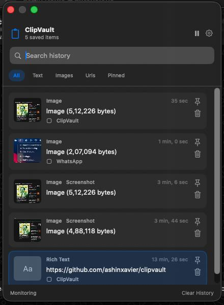
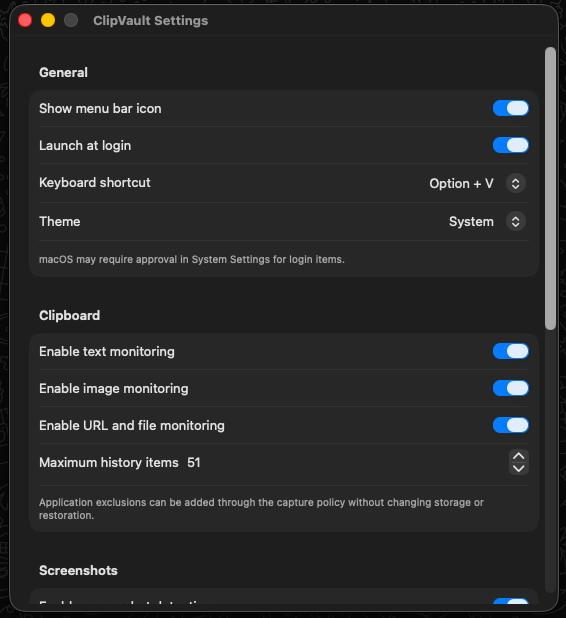
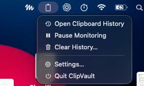

Everything you copy,
remembered.
ClipVault is a local-first clipboard manager for macOS. Your whole copy history, searchable from the menu bar. No account. No sync. No analytics. No network.

Local-first by design
Your history lives in ~/Library/Application Support/ClipVault and nowhere else. No network requests, no logging of clipboard contents.
One keystroke away
Press Option V and a floating, keyboard-friendly panel appears. No Dock icon, no window clutter.
Remembers more than text
Rich text, links, file references, images, and new screenshots - each with a preview and a relative timestamp.
Yours to control
Pause monitoring, toggle content types, cap history size, and clear anything or everything, pinned items included or not.
Features
Built for how you actually copy.
01Capture
- Text, rich text, URLs, file references, and images - deduplicated by content, so repeats don't pile up.
- Source-app metadata and previews where macOS provides them.
- Watches your screenshot folder and can copy new shots straight to the clipboard.
02Find and restore
- Search plus All, Text, Images, URLs, and Pinned filters.
- Pin what you reuse; pins survive routine cleanup.
- Restores the original content: rich text stays rich, files stay files, images stay images.
- Full keyboard control - arrows, Enter to restore, Esc to close, ⌘ F to search.
03Privacy and control
- Pause and resume monitoring anytime, from the panel or the menu bar.
- Per-type switches for text, image, and URL/file capture.
- Adjustable history limit - 500 by default, up to 5,000 - with a storage usage view.
04Fits your Mac
- Menu bar app with an optional icon, system/light/dark appearance, and launch at login.
- Configurable global shortcut: Option V or Control Option V.
Screenshots
Quiet by default. There when you need it.


Keyboard shortcuts
Never touch the mouse.
Your data stays on your Mac.
SQLite holds history metadata; images and other binary content are stored as local files under ~/Library/Application Support/ClipVault/. The data directory and files get owner-only permissions, and clipboard contents are never logged.
Install
Build it from source.
$ git clone https://github.com/ashinxavier/clipvault
$ cd clipvault
$ bash Scripts/package-dmg.shOpen build/ClipVault.dmg and drag ClipVault.app to Applications.
The package is ad-hoc signed, so macOS blocks it on first launch. After that first attempt, open System Settings > Privacy & Security and click Open Anyway.
Requires macOS 14 or later on Apple silicon, Apple Command Line Tools with Swift 6.3.3, and a compatible macOS SDK.
Open the repository→